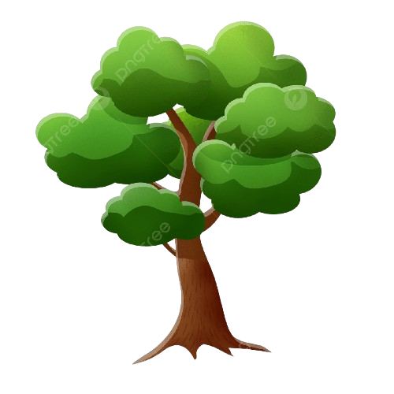

Petunjuk:
1️⃣ Klik buah apel atau jeruk di pohon
2️⃣ Amati buah jatuh ke tanah
3️⃣ Lihat bagaimana gravitasi bekerja

🍎
🍊
🍎
🍊
🌱 Tanah
⬇️ GRAVITASI
↓
Hasil Pengamatan:
Klik buah di pohon untuk melihat gaya gravitasi bekerja!
📚 Penjelasan:
Gaya gravitasi adalah gaya tarik yang dimiliki bumi terhadap semua benda di sekitarnya. Semua benda yang memiliki massa akan tertarik ke pusat bumi. Itulah sebabnya buah jatuh ke bawah, bukan ke atas atau ke samping. Gravitasi bumi membuat kita tetap berdiri di tanah dan tidak melayang di udara.